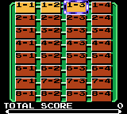
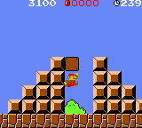
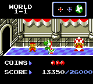
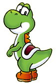

チャレンジゲーム
|
オリジナル１９８５のコースを１つでもクリアすると遊べるようになります。 クリアしたコースに、「ヨッシーのたまご」「赤コイン」「チャレンジスコア」が設定されています。３つのチャレンジを、達成できるか？！ |
|  |

|
オリジナルゲームでクリアしたコースは、明るい茶色になりチャレンジできるようになります。 チャレンジゲームのマップは、こんな感じです。 右上には、チャレンジに成功した証の、メダルが２つあります。 ヨッシーのたまごを見つけるともらえる、メダルは無いみたい・・・ |
|
これがチャレンジゲームのゲーム画面。 画面の上には、５枚の赤コインのうち、１枚とったことが示されてます。 ここで、大ヒント！ この場所はW1-1で、ヨッシーが隠れている場所なのです！ |
 |
|  |
たまごを見つけて、お城にたどりつくと・・・ キノピオが待っていました。ヨッシーもたまごからかえって、大喜び。 あなたは、全てのヨッシーを見つけ出せるか？ |
| オリジナル｜チャレンジ｜VSゲーム｜おまけ |  |
|
|